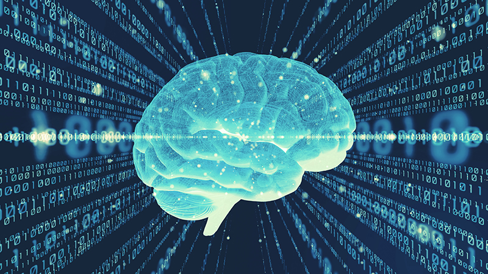
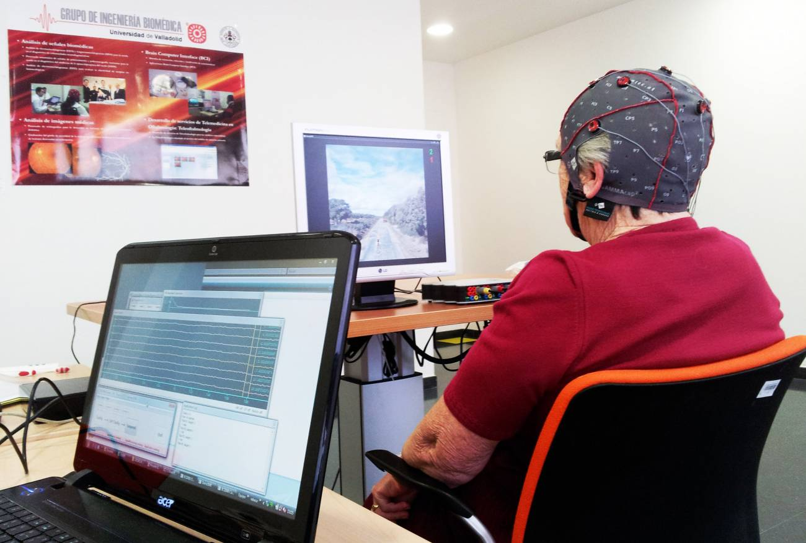
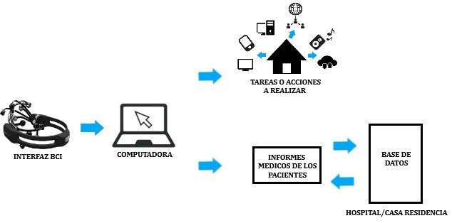
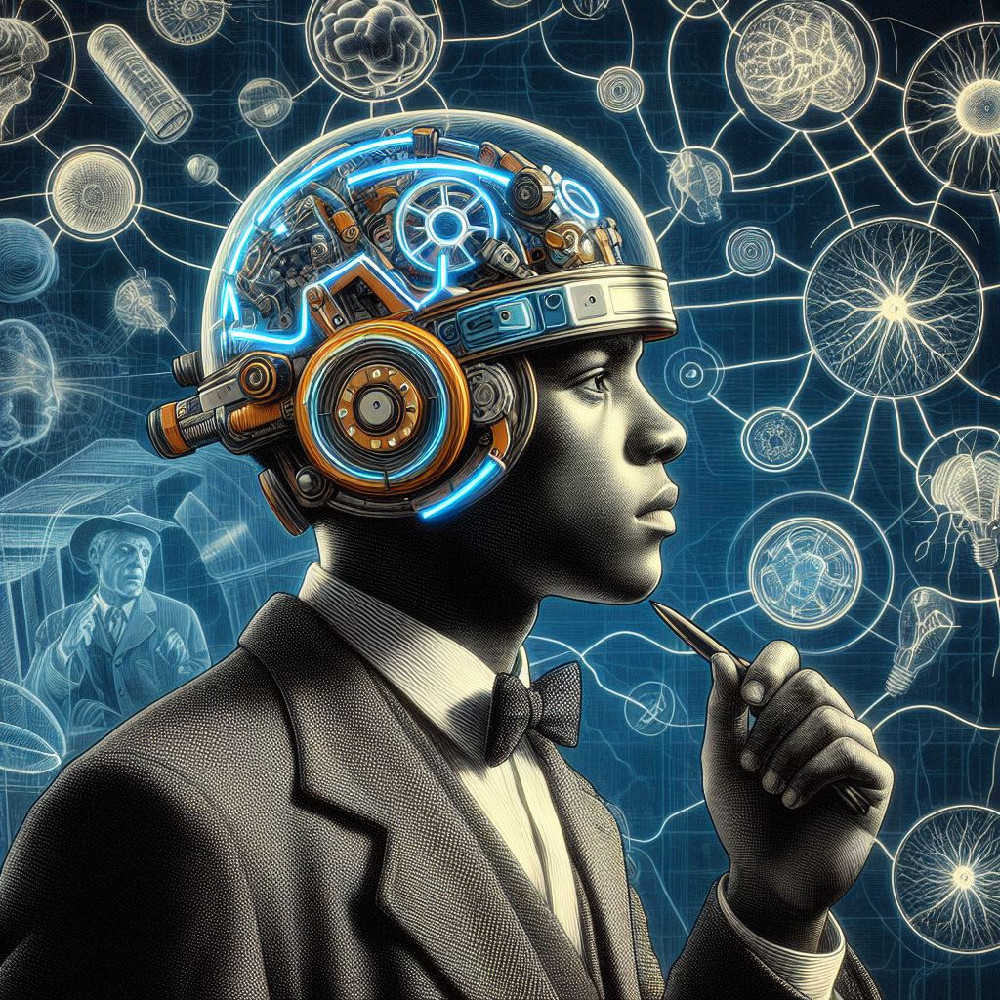

¿Qué es un dispositivo BCI y por qué es importante?
La interfaz cerebro-ordenador o tambien conocida como tecnología BCI es un tipo de dispositivo hardware que establece una conexión entre el cerebro de una persona y un ordenador o computadora. Este tipo de dispositivo esta ideado para ayudar a personas que han tenido, por ejemplo, un ictus, una lesión medular …, debido a estos sucesos, estas personas pueden llegar a tener secuelas como una parálisis en las extremidades superiores y/o inferiores.
Beneficios de la tecnología BCI para personas con discapacidades
Esta tecnología tiene la gran ventaja de proporcionar a las personas con graves discapacidades físicas la capacidad de controlar dispositivos electrónicos y poder comunicarse con su familia o con cualquier persona, todo esto evitando los teclados o las pantallas táctiles.
La tecnología BCI ha supuesto un gran cambio y un avance en la tecnología que se usa para la atención médica, ya que ha mejorado las habilidades de comunicación con personas con discapacidades físicas, y por tanto ahora a los pacientes se les puede realizar mejor un análisis o una revisión.

Impacto de la tecnología BCI en otros sectores
Puede proporcionar una gran innovación en otros sectores como el de los juegos ya que los jugadores pueden vivir experiencias más inmersivas e interactivas en un videojuego, también, en el sector industrial al permitir la conexión directa en interfaces controladas por el cerebro para la maquina y el equipo.
Consideraciones éticas en el uso de la tecnología BCI
Las cuestiones éticas o morales siempre suponen un problema en nuestra sociedad, con la tecnología BCI ocurre lo mismo ya que incluyen cuestiones relacionadas con la privacidad, con el sentimiento, con la seguridad de datos o el posible uso indebido de esta nueva tecnología, por tanto, estas preocupaciones necesitan unas directrices y unas regulaciones éticas para que la tecnología BCI no suponga un peligro para nuestra sociedad.

Historia y evolución de la tecnología BCI
La idea de la tecnología BCI nació en el año 1875, su creador fue el científico Richard Caton, usó un galvanómetro para observar los impulsos nerviosos del cerebro en algunos animales vivos.
Casi medio siglo después Hans Berger siguió con el trabajo de Canton, Berger fue el primero en registrar un electroencefalograma (EEG) de un cerebro humano, consiguió clasificar las ondas cerebrales en ondas Alfa de 8 a 12 HZ.
A partir del 2016, la comunidad científica se encuentra experimentando y se ha creado una empresa llamada Neuralink, fundada por el empresario y multimillonario estadounidense Elon Musk.
Dispositivos que están siendo reemplazados por la tecnología BCI
En los últimos tiempos la interfaz cerebro-computadora ha sustituido a muchos productos tecnológicos, aunque todavía es una tecnología no muy avanzada, como son, por ejemplo: los teclados y ratones, los dispositivos de control de voz, los controles manuales en las prótesis robóticas y los controladores de juegos.
Los expertos dicen que en un futuro no muy lejano todos estos aparatos tecnológicos serán sustituidos por la tecnología BCI, ya que cada vez los cables incomodan más y se está creando cada vez más dispositivos electrónicos inalámbricos como los teléfonos móviles, los auriculares, los ordenadores…

Evolución de las interfaces cerebro-computadora
Al principio, las tecnologías BCI eran procesos muy invasivos ya que se conectaban al cerebro mediante electrodos, aunque eran muy precisos, podrían oscasionar riesgos quirúrgicos. Hoy en día en las tecnologías BCI se usan cascos o diademas para evitar estos riesgos, estos aparatos vienen equipados con electroencefalografía (EEG), que capta señales electicas del cerebro.
Los avances en inteligencia artificial han supuesto un cambio en la velocidad y en la precisión de las BCI, los algoritmos que interpretan las señales neuronales han mejorado considerablemente. En general, la evolución de las BCI se está acelerando hacia unas interfaces más eficientes y menos invasiva.

Recursos adicionales sobre la interacción humano-computadora
Recurso: https://thedecisionlab.com/languages/es-es/reference-guide/design/human-computer-interaction
Referencias
The Decision Lab. (2024). Interacción Persona-Ordenador. The Decision Lab. Retrieved October 18, 2024, from https://thedecisionlab.com/languages/es-es/reference-guide/design/human-computer-interaction
Softtek. (2021, septiembre 3). Nuevas tendencias en Human-Computer Interaction (HCI). Softtek. https://blog.softtek.com/es/nuevas-tendencias-en-human-computer-interaction-hci
Cerebrum. (2020, julio 26). El mayor logro de la neurociencia: La interfaz cerebro-computadora. Cerebrum. https://cerebrum.la/el-mayor-logro-de-la-neurociencia-la-interfaz-cerebro-computadora/
Bitbrain. (n.d.). Aplicaciones de interfaces cerebro-computador. Bitbrain. https://www.bitbrain.com/es/aplicaciones/interfaces-cerebro-computador
Educational Wave. (2024, octubre 7). Pros and cons of brain-computer interface. Educational Wave. https://es.educationalwave.com/pros-and-cons-of-brain-computer-interface/
Wikipedia. (2023, octubre 9). Interfaz cerebro-computadora. Wikipedia. https://es.wikipedia.org/wiki/Interfaz_cerebro-computadora
Softtek. (2021, mayo 17). El éxito de las primeras interfaces cerebro-ordenador (BCI). Softtek. https://blog.softtek.com/es/el-exito-de-la-primeras-interfaces-cerebro-ordenador-bci
